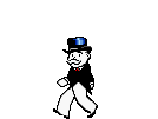

El juego de mesa mas vendido en la historia
ANTES
Un juego creado con la funcion de servir como herramienta para
enseñar las teorias acerca de la justicia social y economicas extraidas
del estudio titulado progreso y misera de henry george.

AHORA
Con los años la finalidad del juego cambio para solo disfrutar un buen rato
negociando propiedades y hasta haciendo uso me medio electronicos para
todas las transaciones que requiere el juego.
MONOPOLY
comercializado por primera vez en el año 1936
A lo largo de 80 años el juego a sufrido una notable evolucio
Sus multiples ediciones y sus tantas y sus tantas versiones han dado pie
a que se cambiara desde la caja que lo contiene hasta los elementos que los componen.
Logrando, asi mantenerse como su favorito a traves de las decadas.